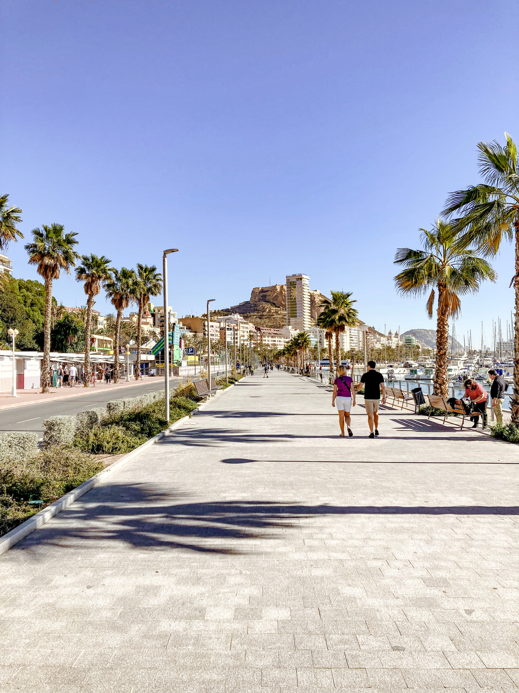
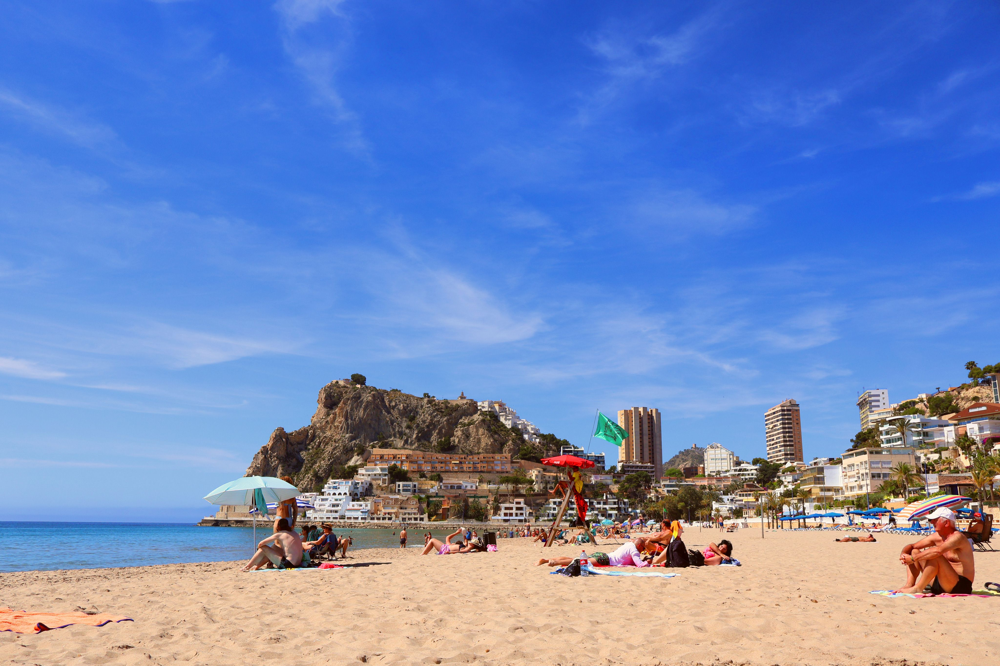
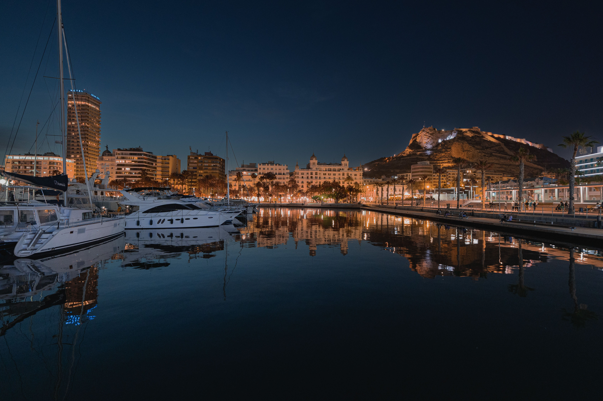
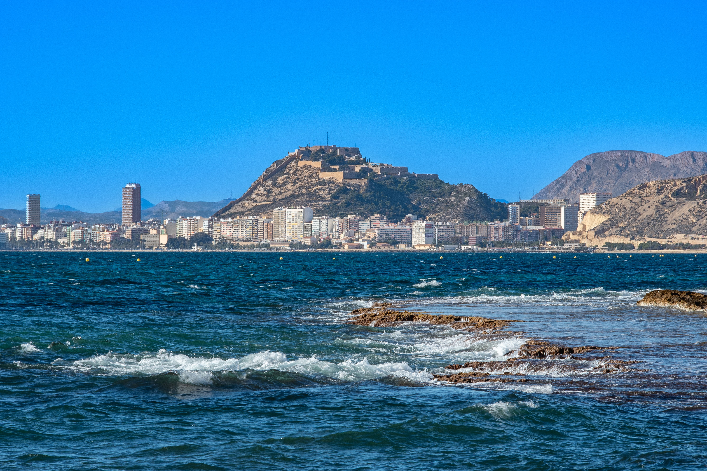

A Mediterranean city on Spain's Costa Blanca, Alicante adds another side to our travels around Spain — sunshine, seafront, city streets and that unmistakable Spanish coastal atmosphere.
We've travelled to Alicante as part of our time exploring Spain, adding the Costa Blanca to a list that already includes Barcelona, Madrid, Fuengirola, the Costa del Sol and the Balearic Islands.
Alicante works brilliantly as a city-and-coast destination: the Mediterranean is right on the doorstep, while the old streets, waterfront and hilltop castle give you plenty to explore away from the beach.
The fortress above the city is one of Alicante's defining landmarks, with sweeping views across the coast and city.
Alicante's famous palm-lined promenade is made for a wander beside the waterfront.
A city beach right beside central Alicante, making it easy to mix sightseeing with time by the Mediterranean.
Colourful houses, narrow lanes and steps climbing the hillside beneath Santa Bárbara Castle.




One of Alicante's big advantages is how easily it combines a proper Spanish city break with time beside the Mediterranean. You can spend the morning exploring historic streets and landmarks, stop for lunch in the centre and still finish the afternoon on the beach.
The city is also compact enough to explore without turning every day into a major expedition. The waterfront, old town, shopping streets and Postiguet Beach are all close together, while Santa Bárbara Castle rises above the centre and gives Alicante its unmistakable skyline.
Perched high on Mount Benacantil, Santa Bárbara Castle is one of Alicante's best-known sights. Its elevated position gives wide views over the city, harbour and Mediterranean coastline, while the fortress itself reflects centuries of Alicante's history.
Even if you're mainly visiting Alicante for sunshine and the coast, the castle gives the city much more than a straightforward beach-resort feel.
The waterfront is a huge part of Alicante's appeal. The Explanada de España, with its distinctive patterned paving and rows of palm trees, runs beside the marina and is one of the city's signature sights.
Nearby, Postiguet Beach puts golden sand right beside the city centre. That closeness is what makes Alicante so handy: sightseeing and beach time don't need to be separate parts of the holiday.
Beneath the castle, the Barrio de Santa Cruz is one of the most characterful parts of Alicante, with narrow lanes, steps, colourful houses and flower-filled corners climbing the hillside.
Back at street level, Alicante's historic centre mixes plazas, cafés, shops and traditional architecture. It's an easy area to wander rather than treating the city as a checklist of individual attractions.
A small Mediterranean island off the Alicante coast and a popular option for a boat trip from the city.
Close to Alicante and famous for its extraordinary palm groves, Elche makes an easy change of scenery.
A colourful coastal town known for its brightly painted seafront houses and beaches.
Alicante is a useful base for exploring more of the surrounding Mediterranean coastline and its beach towns.
Alicante's food scene reflects its coastal setting, with rice dishes, seafood and Mediterranean flavours featuring heavily on local menus. The city centre, old town and waterfront all have plenty of places to stop for anything from tapas to a longer evening meal.
Spring and autumn are attractive for sightseeing with generally milder temperatures, while summer is the obvious choice if beach time is the priority.
Much of central Alicante is walkable, and local public transport makes it possible to reach areas farther along the coast without needing to drive everywhere.
Alicante works for a short city break, but extra days give you time to combine the city with beaches and trips around the Costa Blanca.
Alicante-Elche Miguel Hernández Airport serves the Costa Blanca and is conveniently positioned for Alicante and the surrounding coastal resorts.
Take a virtual look around Alicante before you travel, or revisit the city from home.
For a longer Spanish adventure, browse this TourRadar itinerary and see how it could fit into a wider trip.
Disclosure: This is an affiliate link. If you book through it we may earn a small commission at no extra cost to you.
Gaudí, Gothic streets and the Mediterranean.
Spain's capital and our Bernabéu adventure.
A beach town we've returned to three times.
Our travels along Spain's southern coast.
Our Mediterranean island travels in Spain.
From mainland cities and Mediterranean coasts to the Balearic Islands, our Spain hub brings all of our Spanish travels together.